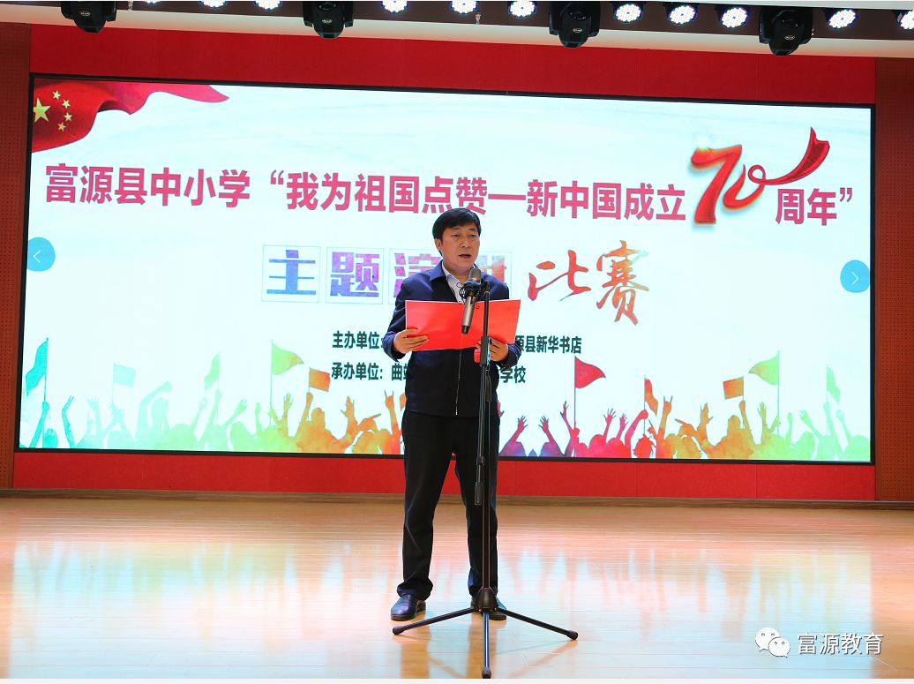
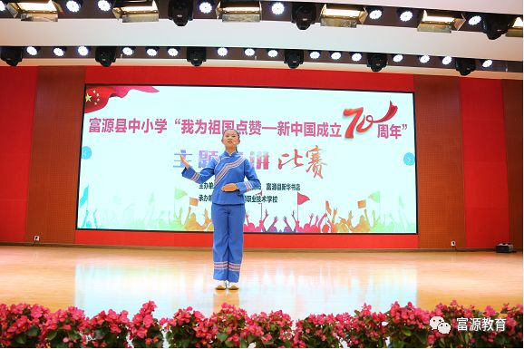

4月19日、20日，富源县举办了中小学生“我为祖国点赞——新中国成立七十周年”主题演讲比赛，39名选手按学段分组进行了精彩演讲。
本次比赛由富源县教育体育局、富源县新华书店联合主办，富源县胜境街道外山口小学、富源县职业技术学校分别承办了小学组、中学组的比赛。
19日上午，来自各乡(镇、街道)、县直小学推选的15名选手齐聚外山口小学，展开了扣人心弦的较量。20日上午，来自各乡(镇、街道)、县直中学、
县职业技术学校推选的24名选手（初中14名、高中及职校10名）相聚县职业技术学校，按初、高中组进行了激烈角逐。

演讲中，选手们紧扣主题，或追忆筚路蓝缕的建国历史，或讴歌改革开放的伟大成就，或展望未来的美丽中国梦，表达了对伟大祖国从站起来、富起来到强起来的伟大历程的赞美之情。
他们尽情挥洒激情，展示才华，真情流露，用充满青春朝气和豪迈誓言的演讲，感染着现场的每一位观众，点燃了全体师生爱我中华、强我祖国的伟大梦想。
经过精彩大比拼，袁语遥演讲的《爱的赞歌》、李瑢演讲的《我爱你，中国》、侯瑶演讲的《城里城外，笑着醒来》分别荣获小学组、初中组、高中组一等奖；朱佳一、龚璨冉，刘宇、李星颖，郭柳君、
夏薇分别获得小学、初中、高中组二等奖；其余参赛同学均取得相应学段组的三等奖。
比赛结束后，评委组组长对选手们的演讲从内容思想、语言表达、形象风度、整体效果（印象）等四个方面进行了详细、全面、深入的点评。
 县委教育体育党工委、县教育体育局主要领导在选手演讲开始前致辞，对同学们提出要求，希望同学们坚定理想信念，增强知识本领，注重品德修炼，不忘初心，努力奋斗，成为对国家、对人民、对社会有用的人，
今日为伟大祖国点赞，明日让祖国为大家点赞。
县委教育体育党工委、县教育体育局主要领导在选手演讲开始前致辞，对同学们提出要求，希望同学们坚定理想信念，增强知识本领，注重品德修炼，不忘初心，努力奋斗，成为对国家、对人民、对社会有用的人，
今日为伟大祖国点赞，明日让祖国为大家点赞。
县委教育体育党工委、县教育体育局主要领导在选手演讲开始前致辞，对同学们提出要求，希望同学们坚定理想信念，增强知识本领，注重品德修炼，不忘初心，努力奋斗，成为对国家、对人民、对社会有用的人，
今日为伟大祖国点赞，明日让祖国为大家点赞。